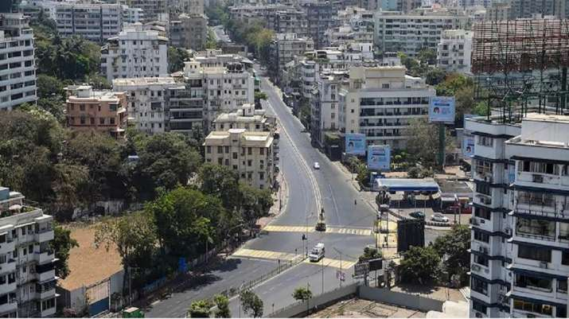
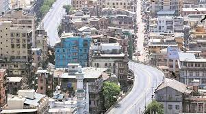
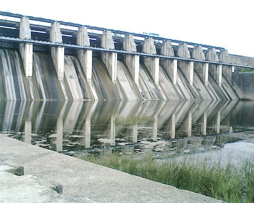
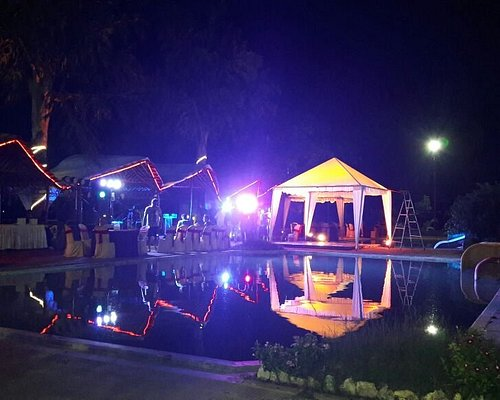
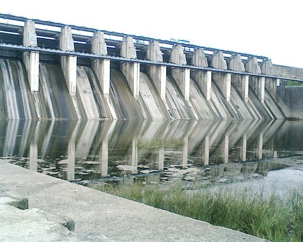
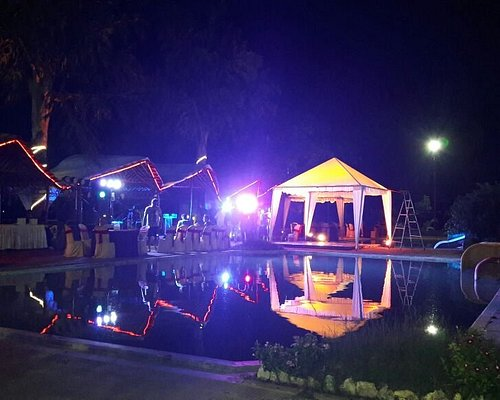

Amravati district (Marathi pronunciation: [əmɾaːʋət̪iː]) is a district of Maharashtra state in central India. It is the administrative headquarter of Amravati division, which is one of the two divisions in Vidarbha (other being Nagpur), out of total 6 regions in state of Maharashtra. The district is situated between 20°32' and 21°46' north latitudes and 76°37' and 78°27' east longitudes. The district occupies an area of 12,235 km². The district has boundaries with Betul District of Madhya Pradesh state to the north, and with the Maharashtra districts of Nagpur to the northeast, Chindwara district of Madhya Pradesh to the northeast Wardha to the east, Yavatmal to the south, Washim to the southwest, and Akola and Buldhana districts to the west.
 
Shri Ambadevi Temple is ancient temple devoted to Goddess Shri Durga situated at Amravati. The city Amravati has derived its name from Shri. Amba. The temple is situated in the center of the city. The temple has less crowd except for festive seasons. One can have good darshan of the Idol of the deity. The Ekvira temple is adjacent to it and is newly constructed and has ample facilities of removing of shoes, parking etc. Clicking photos is not allowed here. The place is peaceful and divine. One should visit whenever at Amravati.
The Upper Wardha Dam is an earthfill straight gravity dam across the Wardha River, a tributary of the Godavari River, near Simbhora village in Morshi taluk in Amravati district in the Indian state of Maharashtra. The dam provides multipurpose benefits of irrigation, drinking water supply, flood control and hydropower generation. The Upper Wardha Dam is also known as the Nala Damayanti Sagar, named after the famous characters Nala and Damayanti of an epic love story in Hindu mythology, Nala Damayanti. The multipurpose Upper Wardha Dam project is considered the lifeline for Amravati city, and Morshi and Warud Talukas. It is an integral component of the Upper Wardha Irrigation Project, which envisages providing water for irrigation, drinking water supply and for industrial use and also flood control. Hydropower generation is planned only when irrigation develops.
Established in the year 2016, Woods Resort and Water Park in Chandur-Railway Road,, Amravati is a top player in the category Water Parks in the Amravati. This well-known establishment acts as a one-stop destination servicing customers both local and from other parts of Amravati. Over the course of its journey, this business has established a firm foothold in it’s industry. The belief that customer satisfaction is as important as their products and services, have helped this establishment garner a vast base of customers, which continues to grow by the day. This business employs individuals that are dedicated towards their respective roles and put in a lot of effort to achieve the common vision and larger goals of the company. In the near future, this business aims to expand its line of products and services and cater to a larger client base. In Amravati, this establishment occupies a prominent location in Chandur-Railway Road,.
 


